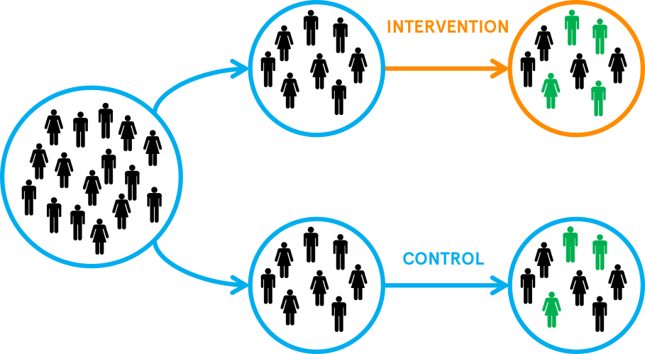

연구 설계의 기본 (6장)
상담연구방법론, by Heppner, P. P., Wampold, B. E., Owen, J., Thopso, M. N.
연구의 근간을 이루는 4가지 요소
- 설계 (design)
- 측정 (measurement)
- 분석 (analysis)
- 이론 (theory)
이 4가지는 서로 상호작용하며, 이들을 개별적인 것으로 보는 것이 상담 연구 문헌의 큰 문제로 지적
연구 설계 미신
하나의 연구 설계가 본질적으로 다른 설계에 비해 “더 좋다”라는 신념
모든 연구 설계는 나름의 강점과 약점을 가지고 있으며, 각자 다른 유형의 노이즈를 줄일 수 있음
연구 가설을 1) 타당한 방법으로 검사(examine)할 수 있으며, 2) 경쟁 가설은 최대한 배제시키면서, 3) 관심 변수들 간의 관계를 끌어낼 수 있도록(isolate) 해주는 연구 설계의 장단점을 파악해 연구 설계를 선택하는 것이 매우 중요!!!
이 때, 편향(bias)나 혼입변인들(confounding)의 존재가 연구자의 이해를 왜곡시킬 수 있음을 인지하고, 이를 제어할 수 있는 연구 설계를 선택하는 것이 중요
- Confounding: 미혼자는 임금에 있어서 불이익을 받는가?
- 경쟁 가설: 걷기는 수명을 연장시키는가? 아이들의 자기통제가 추후 사회적 성취로 이어졌는가?
- 구성 개념의 분리(isolate): 죽음에 대한 불안이 자존감 유지의 근본적 원인인가?
“과학적 방법의 핵심 과제는 연구하고자 하는 구성개념을 분리시키고 경쟁 가설을 배제하면서 동시에 그 구성개념에 대해 유용한 결론을 내리려고 노력하는 것이다.” (쌀과 쌀겨의 비유) p.130
연구 설계의 분류
- 질적 설계 (qualitative designs) : 면접, 관찰, 기록물(역사적 기록, 언론 기록, 내담자 기록 등) 등의 풍부한 자료를 통해 “사회적 경험이 어떻게 생성되고 의미를 부여받는지”를 탐색하고 이해하고 함.
- 양적 설계 (quantitative designs) : 다수의 참여자에 통해 일반적 법칙을 추론해내고자 양적 자료를 수집하고 구성개념들 간의 관계를 분석함.
- 혼합 설계 (mixed methods designs) : 질적 설계와 양적 설계를 결합하여 상호 보완적이고 깊이 있는 이해를 가능하게 함.
전통적으로 연구 설계의 위계가 암묵적 존재
- 연구실에서 완전히 통제된 실험 연구 > 필드 실험과 같은 준실험 연구 > 관찰연구와 같은 의한 상관관계 연구 > 질적 연구나 기술(descriptive) 연구
“연구 설계의 선택은 연구의 대상이 되는 현상 및 연구문제에 부합되어야 한다고 주장한다” (p. 132)
실험 통제와 일반화
연구 설계에서 가장 중요한 개념 두 가지
실험 통제
- 무선 할당(무작위 배정, random assignment) : 연구 참여자들이 연구 조건에 할당되는 방법을 무작위로 결정하는 것
- 조작 (manipulation) : 연구 조건을 조작하는 것

Source: The whats and whys of RCTs
- 위 2가지에 대한 통제의 수준이 높을수록 인과관계의 추론이 더욱 정확해짐
- 이를 내적 타당도(internal validity)라고 함
- “MAXMINCON” 원리
- 변수들의 변량(variance, variability)을 최대화(maximize),
- 변수들의 변량이 품고 있는 노이즈(error)를 최소화(minimize): 특히, 측정(measurement)나 참여자의 개인차(individual differences)로 인한 노이즈
- 변수들의 편향이나 왜곡을 줄 수 있는 변수들을 통제(control)
- “MAXMINCON” 원리
- 반대로, 통제 수준이 높아질 수록 인위적인 상황이 재현되며, 연구 결과의 일반화가 어려워짐
- 예. 걷기가 수명을 연장시키는가?
일반화
통제를 통해 인과관계를 파악하는 것 만큼 중요한 것은 연구 결과를 일반화할 수 있는가에 대한 문제이며,
이를 외적 타당도(external validity)라고 함
- 특히, 상담/심리치료라는 응용이 강조되는 분야에서는 일반화는 중요한 문제임
- 보통, 자연발생되는 상황에서 연구됨
- 예. 특정 상담 기관에서 경험이 많은 치료자와 실제 내담자들을 대상으로 하는 연구
- 예. 진로상담연구에서 전공이나 진로 선택에서 어려움을 겪는 학생들을 대상으로 하는 연구
- 또한, 상담/심리치료에서는 높은 실험 통제가 어렵거나 불가능 또는 비윤리적
- 참여자의 개인차로 인한 노이즈를 최소화하기 어려움: 예. 흑인 내담자와 백인 내담자는 백인 심리치료사에 대해 다른게 반응할 수 있음.
- 무선 할당의 경우:
- 실험에서 위약(placebo) 집단에 할당을 받은 경우, 이들에게 위약이 치료효과가 있다고 속이는 것은 그들에게 해를 가할 수 있음.
- 대기자 집단에 할당을 받은 경우, 처치를 받기 전 오래 기다려야 함으로 해를 입을 수 있음.
- 일반적으로 통제를 최대화할 수록 연구는 더 단순화되고 인위적이 될 수 있으므로, 심리적 도움을 받는 실제 사람들에 대한 연구에서는 방해물이 될 수 있음.
- 즉, 내적 타당도(실험 통제)와 외적 타당도(일반화)의 적절한 밸런스를 고려해야 함.